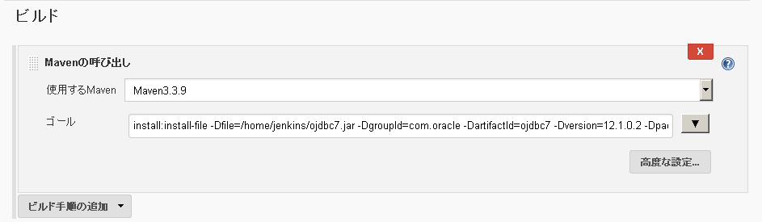

Jenkins設定メモ
Mavenでojdbcを使用する場合 センターリポジトリにjarを公開していない為、ローカル環境にダウンロードしなければ行けない。
- ojdbc7.jarをダウンロード
- ftp転送(home/vagrant)
- home/jenkinsディレクトリ作成
ojdbc7.jarをhome/jenkinsにコピー
cp /home/vagrant/ojdbc7.jar /home/jenkinsojdbc7.jarの所有者をjenkinsに変更
chown -R jenkins. /home/jenkinsmasterにJAVA_HOMEを設定
javaパスの確認
find /usr -name jre- jenkins環境変数設定方法
Jenkinsの管理 → ノードの管理 → master
ローカルリポジトリにmavenのパスを通す
- 新規ジョブ作成
- ビルド Mavenの呼出し
ゴール
install:install-file -Dfile=/home/jenkins/ojdbc7.jar -DgroupId=com.oracle -DartifactId=ojdbc7 -Dversion=12.1.0.2 -Dpackaging=jar -DgeneratePom=true